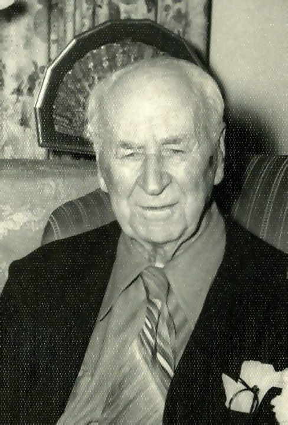
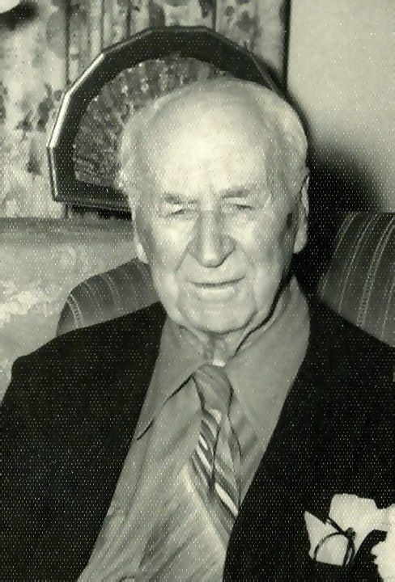

Thomas Sinclair GORE
- Born: 24 Mar 1869, Osceola, Clarke County, Iowa
- Marriage (1): Nellie STOGDILL on 5 Nov 1891 in Alameda, Alameda County, California
- Marriage (2): Pauline Ingrid JOHNSON on 4 Jan 1905 in New York City, New York County, New York
- Died: 16 Feb 1955, Mexico City, D.F., Mexico at age 85
- Buried: British Cemetery, Mexico City, Mexico

 General Notes: General Notes:
FAMILY:
-- Thomas' grandfather by the same name, Thomas Sinclair Gore (1820-1858), was an Irishman who founded the town of Gore's Landing at Rice Lake, Ontario, Canada in 1841.
-- After Thomas' grandfather's death, Thomas' grandmother Harriette Sarah (Hitchcock) Gore was remarried to Frederick William Barron who turned Harriette's large home in Gore's Landing, along the banks of Rice Lake, into a school for boys from the upper class.
-- Thomas' father William Sinclair Gore (1842-1919) moved from Ontario, Canada to British Columbia, Canada in 1875 (at age 35) while a dominion land surveyor working on the westward railroad surveys. At the age of 38 William was appointed Surveyor-General for the Province of British Columbia, Canada, a position he held twice for 20 years, the record for this post in the British Columbia government. William was responsible for preliminary land surveys conducted at the north end of Vancouver Island and for several years was the Minister of Lands and Words. It was he who prepared the specifications for the present legislative buildings in Victoria. In 1891, William was appointed Deputy Minister/Commissioner of Lands & Works for the Province of British Columbia. William's many interests included bicycling, golf and canoeing. He was Commodore of the Victoria Yacht Club and designed and built class winning yachts. In his later years, he was secretary of the Corporation of British Columbia Land Surveyors.
-- Thomas' younger brother Arthur Sinclair Gore (1879-1976) was initially a draftsman who worked for the famed Canadian architect Samuel Maclure for a time. At the age of 28 (in 1907) Arthur started the Electric Blueprint and Map Company. It was one of the first engineering supply and blueprint firms, with branches in both Vancouver and Victoria, British Columbia. His company was the first tenant to move into the Central Building on View Street, Victoria in 1911. In 1912, Arthur commissioned Samuel Maclure to build a home in Victoria (1502 Regents Place) in the Arts & Crafts style of architecture. He and his wife Mary lived in that home for 30 years until Mary's death in 1942. Arthur then moved to Vancouver where he lived until his death in 1976 at the age of 97. In 1988, the Arthur Gore Home in Victoria was designated a Heritage Site.
BIRTHPLACE: Although Thomas was born in Iowa and not Canada (see research notes), he grew up in Victoria, Vancouver Island, British Columbia, Canada
FIRST WIFE: In 1902, at the age of 34, Nellie was tragically shot and killed while visiting Paris, France (as per the newspaper article regarding the filing of her Will). It appears her trip to Paris occurred after she and Thomas had either separated or divorced.
SECOND WIFE: Pauline was a renowned soprano opera singer known as the "Swedish Nightingale" throughout North America.
RESIDENCES: Osceola, Clarke County, Iowa (1869);
Victoria, British Columbia, Canada (1881);
New York City, New York (1905);
Hotel Geneve, Mexico City (1906-1955);
Summer Estate: 4900 Los Feliz Drive, Los Angeles (built by Gore in 1915) -- see note below.
MOVE TO MEXICO: As a result of his interest in designing, building and owning the Hotel Geneve in Mexico City, he permanently moved his family from New York to Mexico City in Dec 1906 when his daughter Marie was about 8 months old. Marie was their only child.
OPERA SINGER: Thomas was a talented baritone opera singer who performed in New York and Mexico. He occasionally performed with the famous Italian tenor, Enrico Caruso. He also often performed in full costume with the Ladies Morning Choral Club of Mexico City in operatic concert productions directed and produced by his wife Pauline. Noted performances were Verdi's "Il Trovatore", Hadley's "The Legend of Granada", F. Von Flotow's "Martha", Bizet's "Carmen"; and Tschaikowski's "Don Juan".
OUTDOORSMAN: Thomas was an avid outdoorsman. He enjoyed rowing and also climbed to the top of Popocatépetl, a 17,800-foot volcano, located 40 miles south of Mexico City.
GORE ESTATE: 4900 Los Feliz Blvd., Los Angeles, California -- Thomas Gore purchased the 7 bedroom, 3 bath, 6,500 sq. ft., 2-story Gore Estate in the late 1930's from a foreclosure sale, for his family's summer home. His granddaughters spent their childhood vacations at the Gore Estate during WWII. The home sat back with a lengthy driveway from Los Feliz Boulevard, and included a large motor court, a separate home for the caretaker, a swimming pool, and a movie theatre in the basement. The 3.5 acre estate was planted with one of the most extensive variety of plants and trees in Los Angeles at that time. The back of the property had originally contained a massive staircase down the hill all the way to Edgemont Street, which was the original border of the lot. Thomas Gore subdivided his estate into 6 parcels after WWII and sold them. The original house currently sits on 1/2 acre, with the original long driveway to Los Feliz Boulevard.
-- In 2008, the Gore Estate was purchased by the musician known as "Flea" (a.k.a. Michael Balzary, the bassist in the musical group the "Red Hot Chili Peppers") for $3,850,000*. Flea renovated the home and added solar panels to the roof.
-- In 2010, the Gore Estate was next purchased by the comedic actor Jack Black for $5,965,000*.
-- Original photographs of the Gore Estate taken in the 1940's are located here... https://flic.kr/s/aHskG7ihHU
* http://articles.latimes.com/2011/jan/08/home/la-hm-hotprop-black-jack-20110108
1926 TRIP TO ENGLAND: Thomas took his wife Pauline and daughter on a trip to England in 1926. They returned on the White Star R.M.S. Majestic, the largest steamer cruise ship in the world at the time, leaving Southampton, England 20 Oct 1926 and arriving in New York 5 days later. They were among 350 first-class passengers on the ship that included 4,100 total passengers/crew, 9 decks, an indoor swimming pool, elevators, numerous salons, a full orchestra, and hot & cold water in all first-class cabins.
OCCUPATION: Initially a draftsman at the Albion Iron Works in Victoria, British Columbia, Canada, a shipyard and largest iron works north of San Francisco at the time. Thomas later became an architect who in 1907 designed, built and owned the renowned Hotel Geneve in the historic "Zona Rosa" district of Mexico City (see: www.hotelgeneve.com.mx/en/). He was left-handed.
THE HOTEL GENEVE
The Hotel Geneve (Londres 130, Col. Juarez, Mexico City, Mexico) is located within the historic downtown district known as the "Zona Rosa" (or "Pink Zone") within Mexico City's city center, just steps from stores, shopping areas, and minutes away from the most important financial centers and tourist attractions. The hotel is just a couple of blocks from the most important avenues of the city, Paseo de la Reforma and Avenida de los Insurgentes, and within a few blocks of the 1800-acre world famous Chapultepec Park. Although the hotel is located on "Londres" ("London") street, it is near "Genova" ("Geneve") street, hence its name (many streets in that area are named after world cities).
The 270-room, 5-story luxury hotel was designed and built in 1907 by Thomas Sinclair Gore (architect), and was the most modern and elegant hotel in the city at that time. During Mexico's Civil War of 1910, the hotel was declared a neutral zone allowing politicians, revolutionaries, and foreigner dignitaries to stay there safe and protected. On the day the Mexican Revolution began in Nov 20, 1910, Mexico's President/Dictator Porfirio Diaz dined there with his family. Many notable guests have stayed there including Sir Charles Augustus Lindbergh (made famous for his 1927 crossing of the Atlantic Ocean in his single-seat, single-engine monoplane, the "Spirit of St. Louis"), who stayed at the hotel several times (albeit under suspicions that he was staying at the hotel while having an affair with Anne Spencer Morrow, daughter of Dwight Morrow, U.S. Ambassador to Mexico, with whom he later married). Other notable guests through the years have included Pancho Villa (in 1914), Sir Winston Churchill (in 1929), Marlon Brando (in 1952), William Randolph Hearst, Paul Newman, and Jack Palance. It has also been visited by all the Presidents of Mexico and many world leaders including several U.S. Vice Presidents.
The Hotel Geneve was the first in the country to welcome women traveling alone, and first to offer taxi service, a telephone switchboard, and elevators. It was there in 1910 where the very first sandwich was served in Mexico. Through the years, the hotel has been renovated to keep offering its guests the most comfortable rooms and premises, preserving its classic European style. (See: www.hotelgeneve.com.mx/en/)
After Thomas Gore died in 1955, his son-in-law Jack Somers continued as General Manager of the hotel until his death in 1978. After more than 70 years and four generations, the Hotel Geneve was sold by Jack and Marie's four daughters to the Grupo Carso "Calinda" hotel chain.
CONDESA-GORE APARTMENT BUILDINGS
In 1911, after the Hotel Geneve had been built, Thomas Gore then designed and built the Condesa-Gore Apartment Buildings in the trendy part of Mexico City known as Colonia Condesa.
Initially, it was housed only by wealthy European families who were mostly in the oil business. It now houses artists, writers, photographers, journalists, and actors from T.V. and movies.
In the 1980's, long after Mr. Gore had sold the buildings, the tenants created a cooperative and purchased the buildings themselves.
The Condesa Apartment Buildings contain 216 apartments among four separate buildings along both sides of Mazatlan Avenue. The buildings are each four stories tall with the first floor units of the buildings being leased as commercial spaces and include coffee shops, chocolatiers, restaurants, clothing and furniture boutiques. The Condesa Apartment Buildings are now considered historic, with very fine architecture, surrounded by beautiful trees and flower boxes, and have also been used in movie and T.V. productions.
(See: https://es.m.wikipedia.org/wiki/Edificio_Condesa)
Used by kind permission, excerpt from "Gore's Landing and the Rice Lake Plains", by Norma Martin, Catherine Milne, Donna S. McGillis; 1986, printed by Haynes Printing of Cobourg, Ontario, Canada:
From pages 232-233:
Thomas was intensely interested in Gore's Landing and his ancestors who are buried in St. George's cemetery. Each year until his death in 1955 he sent a generous donation at Christmas to St. George's Church and the public library.
Research Notes:
-- Photos courtesy of G.A. Miller
-- Additional Photos of Thomas Gore (https://flic.kr/s/aHskEBZ3pk)
-- Additional Photos of Hotel Geneve (https://flic.kr/s/aHskbJpChB)
-- Hotel Geneve (www.hotelgeneve.com.mx/en/)
-- Birth Place (Osceola, Iowa) noted on "Border Crossings: From Mexico to U.S. (1895-1957)"; and also on daughter Marie Sinclair Gore's "U.S. Consular Registration Application (1916-1925)"
-- U.S. Consular Registration Applications, 1916-1925
-- 1881 Census of Canada (Victoria, B.C., Canada)
-- 1891 Census of Canada (Victoria, B.C., Canada)
-- RMS Majestic: http://en.wikipedia.org/wiki/RMS_Majestic_(1914)
-- Gore's Landing and the Rice Lake Plains; by Norma Martin and Catherine Milne and Donna S. McGillis (Cobourg, Ontario, Canada: Haynes Printing, 1986)
-- Albion Iron Works (en.wikipedia.org/wiki/Victoria_Machinery_Depot)
-- Find A Grave, Memorial # 169550234
Thomas married Nellie STOGDILL, daughter of Rev. J. W. STOGDILL and Ellen Lucinda BALDWIN, on 4 Jan 1905 in New York City, New York County, New York. (Nellie STOGDILL was born on 23 Aug 1868 in West Farmington, Trumbull County, Ohio and died on 19 Nov 1902 in Paris, France.)
Thomas next married Pauline Ingrid JOHNSON, daughter of Frank JOHNSON and Mary OLSON, on 4 Jan 1905 in New York City, New York County, New York. (Pauline Ingrid JOHNSON was born on 4 Dec 1874 in Hobart, Lake County, Indiana, died on 20 Apr 1950 in Mexico City, D.F., Mexico and was buried in British Cemetery, Mexico City, Mexico.)
|

.jpg "Thomas Gore (baritone opera in costume, New York City)
1890's
(Click on Picture to View Full Size)")
 & Bessie Johnson (left).jpg "Thomas, Pauline & Marie Gore, with Bessie Johnson (left)
1910
(Click on Picture to View Full Size)")
.jpg "Thomas Gore in opera production of 'Martha'
1913
(Click on Picture to View Full Size)")
.jpg "Thomas Gore with granddaughter Pauline Marie Somers (Mexico City)
Oct 1932
(Click on Picture to View Full Size)")
.jpg "Thomas Gore (Mexico City)
(Click on Picture to View Full Size)")
.jpg "Thomas Gore (in front of his Hotel Geneve, Mexico City)
1930's
(Click on Picture to View Full Size)")
.jpg "Thomas Gore (Hotel Geneve, Mexico City)
1949
(Click on Picture to View Full Size)")

(front row: Somers daughters and their mother Marie Gore-Somers)
(Click on Picture to View Full Size)")
") 
